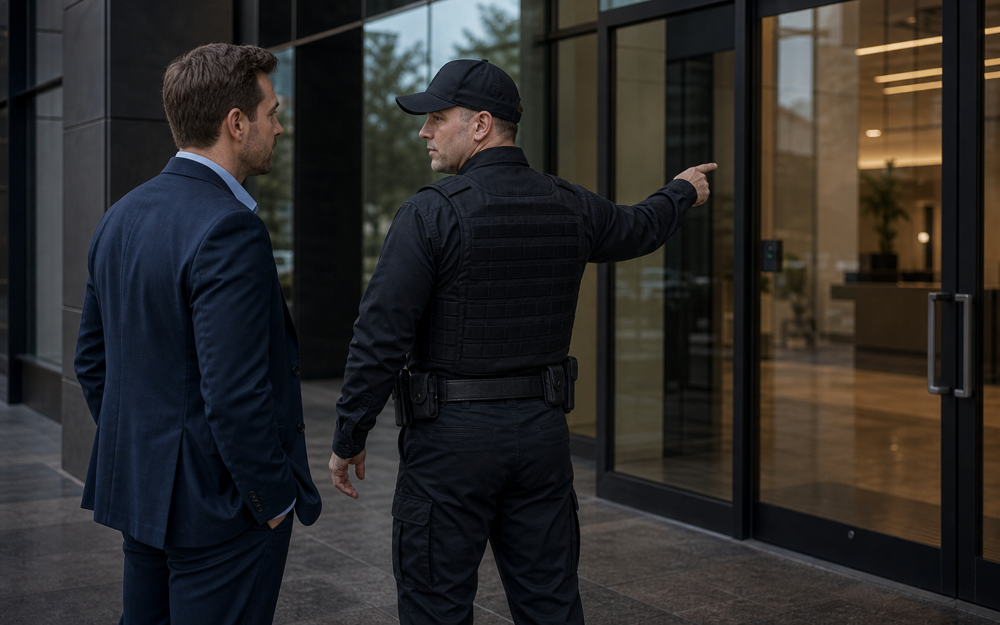

Operational experience
Military, law-enforcement, and security experience help shape post expectations, escalation habits, and professional tone.

Risk assessments, audits, and tailored protection plans grounded in military, law enforcement, and private security experience.
Highline keeps the trust factor practical: veteran-owned leadership, law-enforcement experience, real communication, and security work that can be documented after the shift.
Military, law-enforcement, and security experience help shape post expectations, escalation habits, and professional tone.
Property type, visitor flow, and hours of concern usually determine whether a fixed post, patrol, fire watch, or event plan fits best.
The goal is coverage a client can understand afterward: what was checked, what changed, and who was notified.
Highline helps clients define real risks, tighten procedures, and turn security concerns into practical operating plans. The work is direct, local, and accountable, with recommendations that match the site's budget, exposure, and goals.
Every assignment is built around clear post expectations, respectful client communication, and a security presence that reflects the property's standards.
Request Security Consulting

Security consulting is useful when a client knows something needs to improve but does not yet know whether the answer is staffing, patrols, lighting, access control habits, incident procedures, or a clearer communication chain.
Northeast Florida properties vary quickly from riverfront offices to beach venues, gated communities, medical offices, retail centers, and active construction. A useful review has to consider the site, the people using it, and the way problems actually show up there.
Highline keeps consulting practical: identify exposure, prioritize what matters, and translate the findings into a plan that can be staffed, explained, and measured.
Security buyers usually compare services by cost first, but the better question is whether the service matches the site's actual pressure points.
Start with the environment: entrances, parking areas, visitor flow, lighting, hours of concern, known incidents, and whether the property needs a fixed officer, patrol movement, or temporary coverage.
Highline should know who receives updates, what should be documented, how quickly issues need to be escalated, and whether portal visibility or GPS-supported reporting would help management evaluate the assignment.
The officer presence should match the property. For property managers, ownership groups, construction teams, and executive clients, the goal is professional deterrence and confidence, not an aggressive look that makes residents, guests, staff, or vendors uncomfortable.
Before requesting security consulting, gather the address or service area, desired schedule, expected start date, special access instructions, uniform preference, and any recent activity that explains the concern.
Highline pairs trained people with reporting, GPS tracking when appropriate, and real-time client communication.
Uniform requests can be accommodated so the officer presence fits the site, client expectations, and visitor experience.
Highline stays reachable and accountable, with local leadership and disciplined operating standards.
Years of security, military, and law enforcement experience
Readiness for urgent site needs when arranged
Share the property type, location, schedule, and concerns. Highline can respond with a practical conversation about guards, patrols, fire watch, event coverage, or a custom plan.